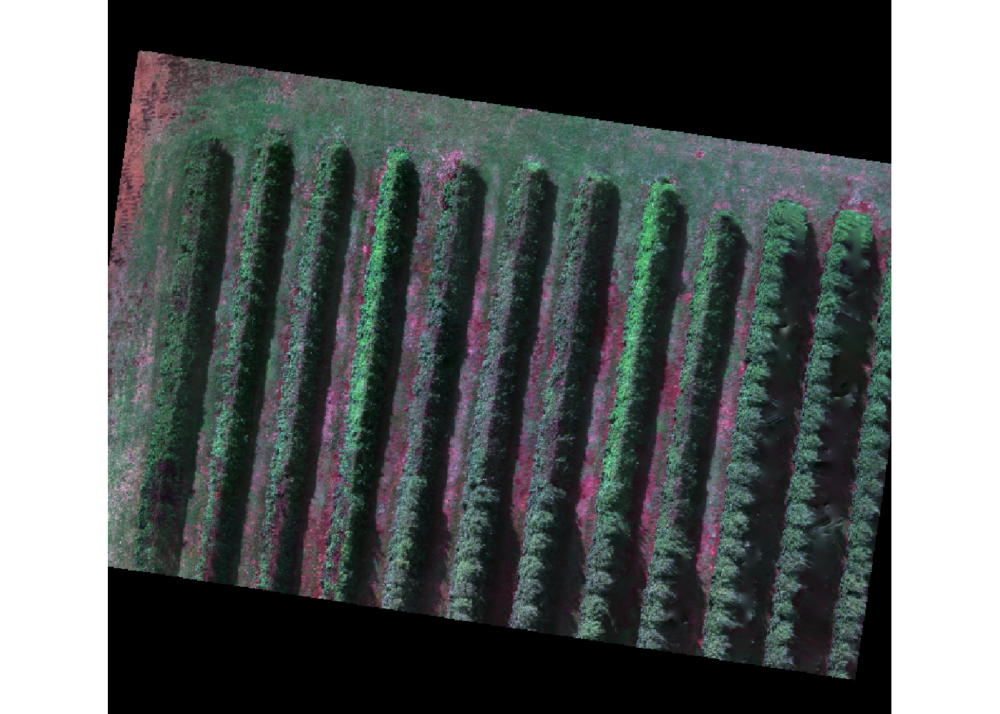
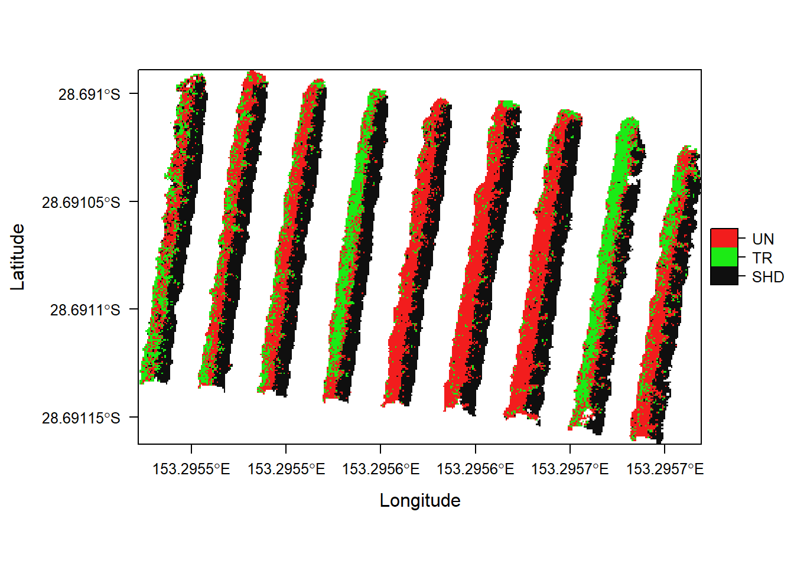

The following code extracts reflectance values from a multispectral aerial image and then tests whether it is possible to build a classification model that can accurately discriminate Backhousia citriodora (lemon myrtle) trees trees infected with myrtle rust (caused by Austropuccinia psidii) and healthy ones.
Please run the following code to install required R packages
install.packages(c("rgdal",
"raster",
"roxygen2",
"tictoc",
"tidyverse",
"caret",
"e1071",
"gdata",
"hsdar",
"utils",
"magrittr",
"rasterVis",
"rmarkdown"))Now we load the installed packages:
library(rgdal) #load installed pkgs
library(raster)
library(tictoc)
library(caret)
library(gdata)
library(hsdar)
library(utils)
library(rasterVis)
library(rmarkdown)
library(roxygen2)
library(magrittr)
library(knitr)
library(reshape2)
library(cowplot)Also the necessary functions, which can be download from the GitHub repository:
source("R/FUN_raw2speclibhsdar.R")#coverts spec data to hsdar lib
source("R/FUN_drop_cat_var.R")#drops factor and factor level
source("R/FUN_extract_pixel.R")
source("R/FUN_caretout.R")
source("R/FUN_prepggwide2long.R")And create a directory for the analysis output:
dir.create("output", FALSE, FALSE)First we loaded a five-band aerial .tif image captured on our field site (1). Then we renamed each channel according to the camera the image was captured (2). (Band1(blue=475nm), Band2 (green=560nm), Band3 (Red=668nm), Band4 (840nm), Band5 (rededge=717nm), Band6 (alphaband))
img <-
brick("data/FullOrtho_crop.tif") #1
img@data@names <-
c("Blue", "Green", "Red", "NIR", "RedEdge", "Alpha") #2The scene looks like this: 
Then we can load a shape file (created with QGIS) to overlay polygons from where we sample pixel representing “Treated”, “Untreated” and “Shadow” regions of each tree. Here are the sample regions:
alldata <- shapefile("data/20180427mrdrone_trainpolyforR.shp")Sample
Now, that we have both objects available (img and alldata), we can extract the pixel values where we positioned the polygons.
dfAll <- extract_pixel(img, alldata)
head(dfAll)## Blue Green Red NIR RedEdge Alpha class
## 1 2766 5874 2327 7495 12694 65535 1
## 2 3096 5300 1953 7320 11838 65535 1
## 3 2670 4761 2590 6603 10523 65535 1
## 4 6720 9444 5570 11305 16311 65535 1
## 5 5486 8058 4229 10106 14024 65535 1
## 6 3813 6203 3439 8751 12602 65535 1Unfortunately, we only have the ID in our new data. We have to replace this with each class to make the classification easier to interpret.
# Constructing table
Treatment <- alldata$Type
ID <- alldata$id
dfclass <- cbind(Treatment, ID)
# Looks up IDs that are linked to class labels and splits them up
classvec <- unique(as.character(dfclass[,1]))
li <- list()
for(i in classvec){
x <- subset(dfclass, dfclass[,1] == i)
li[[i]] <- assign(paste0(i,"_","num"), as.numeric(x[,2]))
}
# Reassembles a df that has written the class labels instead of ID numbers
for(i in UN_num){
dfAll$class[dfAll$class == i] <- "UN"
}
for(i in TR_num){
dfAll$class[dfAll$class == i] <- "TR"
}
for(i in SHD_num){
dfAll$class[dfAll$class == i] <- "SHD"
}
dfAll$class <- as.factor(dfAll$class)
names(dfAll)[7] <- c("Type")Now we divide by 65535 to transform the digital number stored in our multilayer image into reflectance.
dfAll[,1:5] <- dfAll[,1:5]/65535#divide by 65535 to yield refl between 0 and 1Eventually, we can write/export our data to have it available for future analysis.
write.csv(dfAll[,1:7], 'output/2018MyrtleRust_Refl.csv', row.names = FALSE)
classif <- read.csv("output/2018MyrtleRust_Refl.csv")
classif <- classif[,c(1,2,3,4,5,7)] # remove alpha band, not required for clas
classif <- classif[,c(6,1,2,3,5,4)]
unique(classif$Type)## [1] SHD UN TR
## Levels: SHD TR UNPlot part A of spectra
First we set a seed to avoid random number generation in vulnerable processes (1). Then we partition the extracted pixel data in a training and test subset (2). Finally, we control the settings for the random forest training process (3-4).
set.seed(20180427) #1
inTraining <- createDataPartition(classif$Type, p = .75, list = FALSE)
train <- classif[ inTraining,]
test <- classif[-inTraining,] #2
rfControl <- trainControl(
method = "boot",
number = 1
) #3
rfGrid <- expand.grid(mtry = seq(1, ncol(train)-1, 1)) #4Once we tuned the settings, we can run the training process.
rfFit <- train(Type ~ ., data = train,
method = "rf",
importance = TRUE, ntree=5,
trControl = rfControl, tuneGrid = rfGrid,
metric = "Accuracy", maximize = TRUE)Then we validate the model on the not yet seen data partition.
rfPred <-
predict.train(rfFit, test[, !names(test) %in% c("Type")], type = "raw")## RF.I: 1.43 sec elapsedEventually, we can export our results.
Mica.Prediction <-
list(fit = rfFit,
pred = predict.train(rfFit, test[, !names(test) %in% c("Type")], type = "raw"),
confusion = confusionMatrix(rfPred, test$Type),
varImp = varImp(rfFit, scale = FALSE))
sink(file = 'output/I_AllClasses.txt')
Mica.Prediction## $fit
## Random Forest
##
## 9197 samples
## 5 predictor
## 3 classes: 'SHD', 'TR', 'UN'
##
## No pre-processing
## Resampling: Bootstrapped (1 reps)
## Summary of sample sizes: 9197
## Resampling results across tuning parameters:
##
## mtry Accuracy Kappa
## 1 0.8506841 0.7760098
## 2 0.8548483 0.7822408
## 3 0.8497918 0.7746428
## 4 0.8488995 0.7732836
## 5 0.8551457 0.7827076
##
## Accuracy was used to select the optimal model using the largest value.
## The final value used for the model was mtry = 5.
##
## $pred
## [1] SHD SHD SHD SHD SHD SHD SHD SHD SHD SHD SHD SHD SHD SHD SHD SHD SHD
## [18] SHD SHD SHD SHD SHD SHD SHD SHD SHD SHD SHD SHD SHD SHD SHD SHD SHD
## [35] SHD SHD SHD SHD SHD SHD SHD SHD SHD SHD SHD SHD SHD SHD TR SHD SHD
## [52] SHD SHD SHD SHD SHD SHD SHD SHD SHD SHD SHD SHD SHD SHD SHD SHD SHD
## [69] SHD SHD SHD SHD SHD SHD SHD SHD SHD SHD SHD SHD SHD SHD SHD SHD SHD
## [86] SHD SHD SHD SHD SHD SHD SHD SHD SHD SHD SHD SHD SHD SHD SHD SHD SHD
## [103] SHD SHD SHD SHD SHD SHD SHD SHD SHD SHD SHD SHD SHD SHD SHD SHD SHD
## [120] SHD SHD SHD SHD SHD SHD SHD SHD SHD SHD SHD SHD SHD SHD SHD SHD SHD
## [137] SHD SHD SHD SHD SHD SHD SHD SHD SHD SHD SHD SHD SHD SHD SHD SHD SHD
## [154] SHD SHD SHD SHD SHD SHD SHD SHD SHD SHD SHD SHD SHD SHD SHD SHD SHD
## [171] SHD SHD SHD UN SHD SHD SHD SHD SHD TR UN SHD SHD SHD UN SHD SHD
## [188] SHD SHD SHD SHD SHD SHD SHD SHD SHD SHD SHD SHD SHD SHD SHD SHD SHD
## [205] SHD SHD SHD SHD SHD SHD TR SHD SHD SHD SHD SHD SHD UN TR SHD SHD
## [222] SHD SHD SHD SHD SHD SHD SHD SHD SHD TR SHD SHD UN SHD SHD SHD SHD
## [239] SHD SHD SHD SHD SHD SHD SHD SHD SHD SHD SHD TR SHD SHD SHD SHD SHD
## [256] SHD SHD SHD UN SHD SHD SHD SHD SHD SHD SHD SHD SHD SHD SHD SHD SHD
## [273] SHD SHD SHD SHD SHD SHD SHD SHD SHD SHD SHD SHD SHD SHD SHD SHD SHD
## [290] SHD SHD SHD SHD SHD SHD SHD SHD SHD SHD SHD SHD SHD SHD SHD SHD SHD
## [307] SHD SHD SHD SHD SHD SHD SHD SHD SHD SHD SHD SHD SHD SHD SHD SHD SHD
## [324] SHD SHD SHD SHD SHD SHD SHD SHD SHD SHD SHD SHD SHD SHD SHD SHD SHD
## [341] UN SHD SHD SHD SHD SHD SHD SHD SHD SHD SHD SHD SHD SHD SHD SHD SHD
## [358] SHD SHD SHD SHD SHD SHD SHD SHD SHD SHD SHD SHD SHD SHD SHD SHD SHD
## [375] SHD SHD SHD SHD SHD SHD SHD SHD SHD SHD SHD SHD SHD SHD SHD SHD SHD
## [392] SHD SHD SHD SHD SHD SHD SHD SHD SHD SHD SHD SHD SHD SHD SHD SHD SHD
## [409] SHD SHD SHD SHD SHD SHD SHD SHD SHD SHD SHD SHD SHD SHD SHD SHD SHD
## [426] SHD SHD SHD SHD SHD SHD SHD SHD SHD SHD SHD SHD SHD SHD SHD SHD SHD
## [443] SHD SHD SHD SHD SHD SHD SHD SHD SHD SHD SHD SHD SHD SHD SHD SHD SHD
## [460] SHD SHD SHD SHD SHD SHD SHD SHD SHD UN SHD SHD SHD TR SHD SHD SHD
## [477] SHD SHD SHD SHD SHD SHD SHD SHD SHD SHD SHD SHD SHD SHD SHD SHD SHD
## [494] SHD SHD SHD SHD SHD SHD SHD SHD SHD SHD SHD SHD SHD SHD SHD SHD SHD
## [511] SHD SHD SHD SHD SHD SHD SHD SHD SHD SHD SHD SHD SHD SHD SHD SHD SHD
## [528] SHD SHD SHD SHD SHD SHD SHD SHD SHD SHD SHD SHD SHD SHD SHD SHD SHD
## [545] SHD SHD SHD SHD SHD SHD SHD SHD SHD SHD SHD SHD SHD SHD SHD SHD SHD
## [562] SHD SHD SHD SHD SHD SHD SHD SHD SHD SHD SHD SHD SHD SHD SHD SHD SHD
## [579] SHD SHD SHD SHD SHD SHD SHD SHD SHD SHD SHD SHD SHD SHD SHD SHD SHD
## [596] SHD SHD SHD SHD SHD SHD SHD SHD SHD SHD SHD SHD SHD SHD SHD SHD SHD
## [613] SHD SHD SHD SHD SHD SHD SHD SHD SHD SHD SHD SHD SHD SHD SHD SHD SHD
## [630] SHD SHD SHD SHD SHD SHD SHD SHD SHD SHD SHD SHD SHD SHD SHD SHD SHD
## [647] SHD SHD SHD SHD UN SHD SHD SHD SHD SHD UN SHD SHD SHD SHD SHD SHD
## [664] UN UN TR SHD SHD SHD SHD SHD SHD SHD SHD SHD SHD SHD SHD SHD SHD
## [681] SHD SHD SHD SHD SHD SHD SHD SHD SHD SHD SHD SHD SHD SHD SHD SHD SHD
## [698] SHD SHD SHD UN UN UN SHD SHD UN UN SHD SHD SHD SHD SHD SHD SHD
## [715] SHD SHD SHD SHD SHD SHD SHD SHD SHD UN SHD SHD SHD SHD SHD SHD UN
## [732] SHD SHD SHD SHD SHD UN UN SHD SHD SHD SHD SHD SHD SHD SHD SHD SHD
## [749] SHD SHD SHD SHD SHD SHD SHD SHD SHD SHD SHD SHD SHD SHD SHD SHD SHD
## [766] SHD SHD SHD SHD SHD UN SHD UN SHD SHD SHD SHD SHD SHD SHD SHD SHD
## [783] SHD SHD SHD SHD SHD SHD SHD SHD SHD SHD SHD SHD SHD SHD SHD SHD SHD
## [800] SHD SHD SHD SHD SHD SHD SHD SHD SHD SHD SHD SHD SHD SHD SHD SHD SHD
## [817] SHD SHD SHD SHD SHD SHD SHD SHD SHD SHD SHD SHD SHD SHD SHD SHD SHD
## [834] SHD SHD SHD SHD SHD SHD SHD SHD SHD SHD SHD SHD SHD SHD SHD SHD SHD
## [851] SHD SHD SHD SHD SHD SHD SHD SHD SHD SHD SHD SHD SHD SHD SHD SHD SHD
## [868] SHD SHD SHD SHD SHD SHD SHD SHD SHD SHD SHD SHD SHD SHD SHD SHD SHD
## [885] SHD SHD SHD SHD SHD SHD SHD SHD SHD SHD SHD SHD SHD SHD SHD SHD SHD
## [902] SHD SHD SHD SHD SHD SHD SHD SHD SHD SHD SHD SHD SHD SHD SHD SHD SHD
## [919] SHD SHD SHD SHD SHD SHD SHD SHD SHD SHD SHD SHD SHD SHD SHD SHD SHD
## [936] SHD SHD SHD SHD SHD SHD SHD SHD SHD SHD SHD SHD SHD SHD SHD SHD SHD
## [953] SHD SHD SHD SHD SHD SHD SHD SHD SHD SHD SHD SHD SHD SHD SHD SHD SHD
## [970] SHD SHD SHD SHD SHD SHD SHD SHD SHD SHD SHD SHD SHD SHD SHD SHD SHD
## [987] SHD SHD SHD SHD SHD SHD SHD SHD SHD SHD SHD SHD SHD SHD SHD SHD SHD
## [1004] SHD SHD SHD SHD SHD SHD SHD SHD SHD SHD SHD SHD SHD SHD SHD SHD SHD
## [1021] SHD SHD TR UN UN UN UN UN UN UN UN UN TR TR UN UN UN
## [1038] UN TR UN UN UN TR UN TR UN UN UN TR TR TR UN UN UN
## [1055] UN UN UN UN TR UN TR UN UN TR UN UN UN UN TR UN TR
## [1072] UN UN UN UN UN UN TR UN UN UN TR UN UN UN TR UN UN
## [1089] TR UN UN UN UN UN UN UN UN UN TR UN UN UN UN UN UN
## [1106] TR UN TR UN UN UN TR UN TR TR UN TR UN UN TR TR UN
## [1123] UN UN TR UN UN UN UN UN UN UN UN UN UN UN TR TR TR
## [1140] UN TR UN UN UN UN UN UN UN UN UN UN TR UN UN TR UN
## [1157] UN TR TR TR UN UN UN UN UN TR UN UN UN UN UN UN TR
## [1174] TR UN UN UN TR UN UN UN TR TR TR UN UN UN UN UN UN
## [1191] TR UN UN UN UN UN TR UN TR UN TR TR UN TR TR UN UN
## [1208] UN UN UN TR UN SHD UN SHD TR UN UN UN UN UN TR UN UN
## [1225] UN UN UN UN UN UN UN UN UN UN UN UN UN UN UN UN UN
## [1242] UN SHD UN UN TR UN UN TR UN UN UN UN UN TR UN UN UN
## [1259] TR UN UN UN UN TR UN UN TR TR UN TR UN TR UN UN UN
## [1276] TR UN UN TR UN UN UN UN UN UN UN UN UN UN UN UN UN
## [1293] UN TR UN SHD UN UN UN UN UN UN UN UN UN UN UN TR UN
## [1310] UN UN UN UN UN UN UN TR UN TR UN UN UN UN TR UN TR
## [1327] UN TR UN TR UN UN UN UN UN UN UN TR UN UN UN UN UN
## [1344] UN UN UN TR SHD UN UN UN UN UN UN UN SHD SHD SHD UN UN
## [1361] UN UN UN UN UN UN UN UN UN TR UN UN UN UN UN UN UN
## [1378] UN UN UN UN UN UN UN UN UN TR TR UN UN UN UN UN UN
## [1395] TR TR UN UN UN UN UN UN TR UN TR UN UN TR UN UN UN
## [1412] TR UN UN TR TR UN UN TR UN TR TR TR UN UN TR TR TR
## [1429] TR TR TR UN TR UN UN UN UN UN TR UN TR UN TR UN UN
## [1446] UN TR UN SHD UN TR UN TR TR UN UN UN UN TR TR TR UN
## [1463] UN UN UN UN UN TR TR UN UN TR TR TR TR TR UN UN SHD
## [1480] SHD UN TR UN TR TR TR UN UN UN UN TR UN UN UN UN TR
## [1497] UN UN TR UN UN UN UN UN UN UN UN UN TR UN UN UN UN
## [1514] UN UN UN UN UN UN UN UN UN UN UN UN UN UN UN UN UN
## [1531] TR TR UN TR UN UN UN UN UN UN UN UN TR UN UN UN TR
## [1548] UN UN UN UN UN UN UN SHD UN UN UN UN UN UN UN TR UN
## [1565] UN UN UN TR UN UN UN TR UN UN TR UN UN UN UN UN UN
## [1582] UN UN UN UN UN UN UN UN UN UN UN UN UN UN UN UN UN
## [1599] UN UN UN UN TR TR UN UN UN UN UN UN UN UN UN UN UN
## [1616] UN TR UN UN UN UN UN UN UN UN UN UN UN UN TR UN UN
## [1633] UN UN UN UN UN UN UN UN UN UN TR UN UN UN UN UN UN
## [1650] UN UN UN UN UN UN UN UN UN UN UN UN UN UN UN UN UN
## [1667] UN UN UN UN UN UN UN UN UN TR UN UN UN TR UN UN UN
## [1684] UN UN UN TR UN UN UN UN UN TR UN TR UN UN UN UN UN
## [1701] UN UN UN UN UN UN UN UN UN TR UN UN UN UN UN UN UN
## [1718] UN UN UN UN UN UN UN UN UN UN UN UN UN UN UN UN UN
## [1735] UN UN UN UN UN UN UN UN UN UN UN UN UN UN UN UN UN
## [1752] UN UN UN UN UN UN UN UN UN UN UN UN UN UN UN UN UN
## [1769] UN UN UN UN UN UN UN UN UN UN UN UN UN UN UN UN UN
## [1786] UN UN UN UN UN TR UN TR UN UN UN UN TR UN UN UN UN
## [1803] UN TR UN UN UN UN UN UN UN UN UN UN UN UN UN UN UN
## [1820] UN UN UN UN UN TR UN UN UN UN UN UN UN UN UN UN UN
## [1837] UN UN UN UN UN UN UN UN UN UN UN TR UN UN UN UN UN
## [1854] UN TR UN TR UN UN TR UN UN UN TR UN UN TR UN UN UN
## [1871] UN UN TR UN UN UN UN UN UN UN UN UN UN UN UN UN UN
## [1888] UN UN UN UN UN UN UN UN TR UN UN UN UN UN UN UN UN
## [1905] UN UN UN UN UN UN UN UN UN UN UN UN UN UN UN UN UN
## [1922] UN UN UN UN UN UN UN UN UN UN UN UN UN UN UN UN UN
## [1939] UN UN UN UN UN UN UN UN UN UN UN UN UN UN UN UN UN
## [1956] UN UN UN UN UN UN UN UN UN UN UN UN UN UN UN UN UN
## [1973] UN UN UN UN UN UN UN UN UN UN UN UN UN TR UN UN UN
## [1990] SHD UN UN UN TR TR UN UN TR UN UN UN UN UN UN UN UN
## [2007] UN UN TR TR UN UN UN UN UN TR UN TR UN UN TR UN UN
## [2024] UN UN TR TR TR SHD SHD TR UN UN UN TR TR UN UN UN TR
## [2041] UN UN TR TR TR TR TR TR TR TR TR TR TR TR TR TR TR
## [2058] UN TR TR UN UN TR TR TR TR TR TR TR UN TR TR TR UN
## [2075] UN TR TR TR TR TR TR TR TR TR TR TR TR TR TR TR TR
## [2092] TR TR TR UN TR TR UN TR TR TR TR TR UN UN UN UN UN
## [2109] UN TR TR TR UN UN TR TR TR TR TR UN UN TR UN TR UN
## [2126] UN UN UN UN UN UN UN TR SHD TR TR UN TR TR UN TR UN
## [2143] TR TR TR TR UN TR TR UN TR UN UN TR TR TR UN TR TR
## [2160] TR TR TR TR TR TR TR TR TR TR TR TR TR TR UN UN TR
## [2177] TR TR TR TR TR UN TR TR TR TR TR TR TR TR TR TR TR
## [2194] TR TR TR UN UN UN TR TR TR TR TR TR TR TR TR TR TR
## [2211] TR TR TR TR UN UN TR TR TR TR UN TR UN TR UN UN TR
## [2228] TR TR TR TR TR TR TR TR TR UN UN TR TR TR TR TR TR
## [2245] TR TR TR TR TR UN TR UN UN TR TR UN TR TR TR TR TR
## [2262] TR UN UN TR UN UN TR TR TR TR SHD UN UN UN SHD SHD TR
## [2279] TR UN TR UN TR TR UN UN TR TR TR TR TR TR TR TR TR
## [2296] TR TR TR TR TR UN TR TR TR UN UN TR TR TR UN UN UN
## [2313] UN TR TR TR TR TR UN UN TR TR TR UN TR TR TR TR TR
## [2330] TR TR UN TR UN TR TR UN UN UN UN TR TR UN UN UN UN
## [2347] TR TR UN TR TR TR UN UN UN TR TR UN UN UN TR SHD SHD
## [2364] TR TR UN TR TR TR TR TR TR TR TR TR TR TR TR TR TR
## [2381] TR TR TR TR TR TR TR TR TR TR TR TR TR TR TR TR TR
## [2398] UN TR TR TR TR TR TR TR TR TR TR TR TR TR TR TR TR
## [2415] TR TR TR TR UN TR TR TR TR UN TR TR TR TR TR TR TR
## [2432] TR TR TR UN TR TR TR TR TR TR TR TR TR TR UN UN TR
## [2449] TR TR TR TR TR TR TR TR TR TR TR TR UN UN TR TR TR
## [2466] TR TR UN TR TR TR TR UN TR TR TR TR TR TR TR TR TR
## [2483] TR TR TR TR TR TR TR TR TR TR TR TR TR TR TR TR TR
## [2500] TR TR TR UN TR TR UN UN TR UN UN TR UN TR TR TR SHD
## [2517] TR TR UN TR TR TR TR TR TR TR TR UN TR TR TR TR TR
## [2534] UN TR TR TR TR TR TR TR TR UN UN TR UN TR TR TR TR
## [2551] TR TR TR TR TR TR UN TR UN TR UN TR TR TR TR TR TR
## [2568] TR UN TR TR TR TR TR TR TR TR TR TR TR TR TR TR TR
## [2585] TR TR TR TR TR TR UN TR TR TR TR TR TR TR TR TR TR
## [2602] TR TR UN TR TR TR TR TR TR UN TR TR TR UN TR TR TR
## [2619] TR TR TR TR TR TR TR TR TR TR TR TR TR TR TR TR TR
## [2636] TR TR TR TR TR TR TR TR TR TR TR TR TR TR TR TR TR
## [2653] TR TR TR TR TR TR TR TR TR TR TR TR TR TR UN TR TR
## [2670] TR TR TR TR TR UN TR TR TR TR TR TR TR TR TR TR TR
## [2687] TR TR TR TR TR TR TR TR TR TR TR TR TR TR TR UN TR
## [2704] TR TR TR TR UN TR TR TR TR TR TR TR TR UN TR TR UN
## [2721] UN TR TR UN TR UN TR TR TR TR UN TR UN TR TR TR TR
## [2738] TR TR TR TR TR UN TR TR TR TR UN TR TR TR TR TR TR
## [2755] UN TR TR UN TR TR TR TR UN TR TR TR TR TR UN TR TR
## [2772] UN TR TR TR TR UN UN TR TR TR TR TR UN TR TR TR TR
## [2789] UN UN TR TR TR UN TR TR TR TR UN TR TR TR TR UN TR
## [2806] TR UN TR TR TR TR TR UN TR TR TR TR TR TR TR TR TR
## [2823] TR TR TR UN TR TR TR TR TR TR TR UN TR TR TR TR UN
## [2840] UN TR TR TR TR TR TR UN TR TR TR TR TR TR TR UN TR
## [2857] TR UN TR UN TR UN UN TR UN UN TR TR UN UN UN UN TR
## [2874] UN UN TR UN TR TR UN UN UN TR UN TR TR TR TR UN UN
## [2891] TR UN TR UN TR UN TR TR UN TR UN UN TR TR TR UN UN
## [2908] UN TR TR TR TR TR UN TR UN TR TR TR UN TR TR TR UN
## [2925] TR UN UN UN UN TR UN TR UN TR UN TR UN TR TR UN TR
## [2942] UN TR UN TR UN TR TR TR TR TR TR TR TR TR TR TR TR
## [2959] TR TR UN TR TR TR TR TR TR TR TR TR TR TR TR TR TR
## [2976] TR TR UN TR TR TR TR TR TR TR TR TR TR TR TR TR UN
## [2993] TR TR TR TR TR TR TR TR TR TR TR TR TR TR TR TR TR
## [3010] TR TR TR TR TR TR TR TR TR TR TR TR TR TR TR TR TR
## [3027] TR TR TR TR TR TR TR TR TR TR TR TR TR TR TR TR TR
## [3044] TR TR TR TR TR TR TR TR TR TR TR TR TR TR TR UN TR
## [3061] TR TR TR TR TR
## Levels: SHD TR UN
##
## $confusion
## Confusion Matrix and Statistics
##
## Reference
## Prediction SHD TR UN
## SHD 992 6 13
## TR 10 812 175
## UN 20 205 832
##
## Overall Statistics
##
## Accuracy : 0.86
## 95% CI : (0.8472, 0.8721)
## No Information Rate : 0.3338
## P-Value [Acc > NIR] : <2e-16
##
## Kappa : 0.7901
## Mcnemar's Test P-Value : 0.1829
##
## Statistics by Class:
##
## Class: SHD Class: TR Class: UN
## Sensitivity 0.9706 0.7937 0.8157
## Specificity 0.9907 0.9094 0.8900
## Pos Pred Value 0.9812 0.8144 0.7871
## Neg Pred Value 0.9854 0.8980 0.9064
## Prevalence 0.3334 0.3338 0.3328
## Detection Rate 0.3237 0.2649 0.2715
## Detection Prevalence 0.3299 0.3253 0.3449
## Balanced Accuracy 0.9807 0.8516 0.8528
##
## $varImp
## rf variable importance
##
## variables are sorted by maximum importance across the classes
## SHD TR UN
## Red 31.484 -3.309 10.692
## NIR 3.939 19.891 3.057
## Blue 5.928 -9.315 16.476
## RedEdge 2.977 5.958 14.356
## Green 5.263 6.290 4.435sink()
saveRDS(Mica.Prediction, 'output/I_AllClasses.rds')
Mica.Prediction <- readRDS("output/I_AllClasses.rds")imgpred <- brick("data/20180427_orthophoto_noground_MRDrone.tif") # load lemon
#myrtle trees without ground to predict wo grass
NAvalue(imgpred)## [1] -InfNAvalue(imgpred) <- 65535
riskpre <- subset(imgpred, 1:5) # remove alpha/transparency channel as it
#was not used as a predictor var in rf
risk <- riskpre/65535 # divide by 65535 to change values to reflectance
risk@data@names <-
c("Blue", "Green", "Red", "NIR", "RedEdge", "Alpha") # rename
riskpred <- predict(risk, Mica.Prediction$fit)
miat = c(0, 0.33, 0.66, 1)
classcolor <- c("#0F0F0F", "#1CEB15", "#F21D1D")
levelplot(riskpred,
margin = FALSE,
at = miat,
col.regions= classcolor)
currentDate <- Sys.Date()
rstFileName <- paste("output/riskmap",currentDate,".tif",sep="")
writeRaster(riskpred,
file=rstFileName,
format = "GTiff",
overwrite=TRUE)
#NOTE should wrap this file output in functionFirst, we load hyperspectral leaf data from a previous study.
hypdata <- read.csv('data/data.wo.out.binned.cut.csv', check.names = FALSE)
hypdata <- drop_class(hypdata, hypdata$Type, "Healthy")
speclib <- raw2speclib(hypdata)Plot part B of spectra:
spectraggII <- prep_gg(hypdata)
b <- ggplot(spectraggII, aes(Wavelength, Reflectance, colour = Type)) +
geom_line(aes(linetype=Type), size = 1)+
geom_point(aes(shape=Type), size = 2)We can resample the leaf data to the specifications of our multispectral camera.
center <- c(475, 560, 668, 717, 840)
fwhm <- c(20, 20, 10, 10, 40)
micasense <- as.data.frame(cbind(center, fwhm))
data_mica <- spectralResampling(speclib, micasense)
micadata <- as.data.frame(data_mica@spectra@spectra_ma)
micadata <- cbind('Type'=hypdata$Type, micadata)Plot part C
names(micadata) <- c("Type", "475", "560", "668", "717", "840")
spectraggIII <- prep_gg(micadata)
c <- ggplot(spectraggIII, aes(Wavelength, Reflectance, colour = Type)) +
geom_line(aes(linetype=Type), size = 1)+
geom_point(aes(shape=Type), size = 2)Add new names for classification
names(micadata) <- c("Type", "Blue", "Green", "Red", "RedEdge", "NIR")inTrainingM <- createDataPartition(micadata$Type, p = .75, list = FALSE)
trainM <- micadata[ inTrainingM,]
testM <- micadata[-inTrainingM,]
rfControl <- trainControl(
method = "boot",
number = 1
)
rfGrid <- expand.grid(mtry = seq(1, ncol(trainM)-1, 1)) Again, we partition the extracted pixel data in a training and test subset (1). Finally, we control the settings for the random forest training process (2-3).
rfFit.M <- train(Type ~ ., data = trainM,
method = "rf",
importance = TRUE, ntree=5,
trControl = rfControl, tuneGrid = rfGrid,
metric = "Accuracy", maximize = TRUE)Then we run the validation process.
rfPred.M <-
predict.train(rfFit.M, testM[, !names(testM) %in% c("Type")], type = "raw")
Mica.Resamp.Prediction <-
list(fit = rfFit.M,
pred = predict.train(rfFit.M, testM[, !names(testM) %in% c("Type")], type = "raw"),
confusion = confusionMatrix(rfPred.M, testM$Type),
varImp = varImp(rfFit.M, scale = FALSE))
sink(file = 'output/II_ResampLeafPred.txt')
Mica.Resamp.Prediction## $fit
## Random Forest
##
## 348 samples
## 5 predictor
## 2 classes: 'Treated', 'Untreated'
##
## No pre-processing
## Resampling: Bootstrapped (1 reps)
## Summary of sample sizes: 348
## Resampling results across tuning parameters:
##
## mtry Accuracy Kappa
## 1 0.7142857 0.4256774
## 2 0.6507937 0.3015873
## 3 0.6904762 0.3781321
## 4 0.6507937 0.3029922
## 5 0.7222222 0.4447243
##
## Accuracy was used to select the optimal model using the largest value.
## The final value used for the model was mtry = 5.
##
## $pred
## [1] Treated Treated Untreated Untreated Treated Untreated Treated
## [8] Untreated Treated Treated Treated Untreated Untreated Untreated
## [15] Untreated Treated Untreated Treated Treated Treated Treated
## [22] Untreated Treated Treated Treated Treated Treated Treated
## [29] Treated Treated Treated Treated Treated Treated Treated
## [36] Treated Treated Untreated Treated Untreated Untreated Treated
## [43] Untreated Untreated Treated Treated Treated Treated Treated
## [50] Untreated Treated Treated Treated Treated Untreated Treated
## [57] Treated Treated Treated Treated Untreated Treated Untreated
## [64] Untreated Untreated Treated Untreated Untreated Untreated Untreated
## [71] Untreated Treated Untreated Untreated Untreated Untreated Untreated
## [78] Treated Untreated Untreated Untreated Treated Untreated Untreated
## [85] Untreated Untreated Untreated Untreated Treated Untreated Untreated
## [92] Untreated Treated Treated Untreated Treated Untreated Untreated
## [99] Untreated Untreated Treated Untreated Treated Untreated Untreated
## [106] Treated Untreated Treated Untreated Untreated Untreated Treated
## [113] Untreated Untreated Treated Untreated
## Levels: Treated Untreated
##
## $confusion
## Confusion Matrix and Statistics
##
## Reference
## Prediction Treated Untreated
## Treated 42 16
## Untreated 17 41
##
## Accuracy : 0.7155
## 95% CI : (0.6243, 0.7954)
## No Information Rate : 0.5086
## P-Value [Acc > NIR] : 4.595e-06
##
## Kappa : 0.431
## Mcnemar's Test P-Value : 1
##
## Sensitivity : 0.7119
## Specificity : 0.7193
## Pos Pred Value : 0.7241
## Neg Pred Value : 0.7069
## Prevalence : 0.5086
## Detection Rate : 0.3621
## Detection Prevalence : 0.5000
## Balanced Accuracy : 0.7156
##
## 'Positive' Class : Treated
##
##
## $varImp
## rf variable importance
##
## Importance
## RedEdge 4.318
## Red 3.322
## Green 3.107
## NIR 1.360
## Blue 1.146sink()
saveRDS(Mica.Resamp.Prediction, 'output/II_ResampLeafPred.rds')toc() # Stop timing## RF.II: 1.1 sec elapsedAs there is no class “SHADOW” available for the leaf data we first need to drop this class for the aerial imagery as well.
classif2 <- DropClass(classif, classif$Type, 'SHD')
unique(classif2$Type)## [1] UN TR
## Levels: TR UNThen we partition the data again and tune the model settings.
inTrainingD <- createDataPartition(classif2$Type, p = .75, list = FALSE)
trainD <- classif2[ inTrainingD,]
testD <- classif2[-inTrainingD,]
rfControl <- trainControl(
method = "boot",
number = 1
)
rfGrid <- expand.grid(mtry = seq(1, ncol(trainD)-1, 1)) tic("RF.III") #Start timingWe fit the model.
rfFit.D <- train(Type ~ ., data = trainD,
method = "rf",
importance = TRUE, ntree=5,
trControl = rfControl, tuneGrid = rfGrid,
metric = "Accuracy", maximize = TRUE)And validate.
rfPred.D <-
predict.train(rfFit.D, testD[, !names(testD) %in% c("Type")], type = "raw")Then export the results.
Mica.LeafSim.Pred <-
list(fit = rfFit.D,
pred = predict.train(rfFit.D, testD[, !names(testD) %in% c("Type")], type = "raw"),
confusion = confusionMatrix(rfPred.D, testD$Type),
varImp = varImp(rfFit.D, scale = FALSE))
sink(file = 'output/III_Mica.LeafSim.Prediction.txt')
Mica.LeafSim.Pred## $fit
## Random Forest
##
## 6129 samples
## 5 predictor
## 2 classes: 'TR', 'UN'
##
## No pre-processing
## Resampling: Bootstrapped (1 reps)
## Summary of sample sizes: 6129
## Resampling results across tuning parameters:
##
## mtry Accuracy Kappa
## 1 0.8176575 0.6353925
## 2 0.8110027 0.6221600
## 3 0.8118900 0.6238510
## 4 0.8114463 0.6229490
## 5 0.8083407 0.6167901
##
## Accuracy was used to select the optimal model using the largest value.
## The final value used for the model was mtry = 1.
##
## $pred
## [1] TR UN UN UN UN UN TR UN UN TR UN UN UN UN TR UN TR UN UN UN UN TR TR
## [24] UN UN TR UN TR UN TR UN UN TR UN UN UN TR TR UN UN UN TR UN UN TR TR
## [47] UN UN UN UN UN TR UN UN UN TR UN UN TR UN UN UN UN TR UN UN UN UN UN
## [70] UN UN UN TR TR TR TR UN UN UN UN UN UN TR UN TR UN UN UN TR UN UN UN
## [93] UN UN UN UN UN TR UN UN TR UN UN UN UN UN UN UN UN UN UN UN UN UN UN
## [116] UN TR TR TR UN UN UN UN TR UN TR TR TR UN UN UN UN UN UN UN TR TR TR
## [139] UN UN TR UN UN UN UN UN UN TR TR UN UN UN UN UN UN TR TR UN UN UN UN
## [162] UN UN UN UN UN UN UN UN TR TR TR UN TR TR UN TR UN UN UN UN TR UN UN
## [185] UN UN UN UN UN UN UN UN UN UN UN UN UN UN UN UN UN UN TR UN UN UN UN
## [208] UN UN UN UN UN UN UN UN UN UN UN UN TR UN UN UN UN UN TR UN UN UN TR
## [231] UN UN UN TR UN UN TR UN TR UN UN UN UN UN UN TR UN UN TR TR TR UN TR
## [254] UN TR UN TR UN UN TR UN UN UN UN UN UN UN UN TR UN UN UN UN UN UN UN
## [277] UN TR UN UN UN UN UN UN UN UN UN UN UN UN UN TR UN UN UN UN UN UN UN
## [300] UN TR UN UN UN TR UN UN UN UN UN UN TR UN UN UN UN UN UN UN UN UN UN
## [323] UN UN UN TR UN UN UN UN UN TR UN UN UN UN UN UN UN TR UN TR UN UN UN
## [346] UN UN UN UN UN UN UN TR UN UN UN UN UN UN UN UN UN UN UN UN UN UN UN
## [369] UN UN UN UN UN UN UN UN UN UN UN UN UN UN UN UN UN UN UN UN TR TR UN
## [392] TR UN UN UN TR UN UN UN UN TR TR TR UN TR UN UN TR UN UN UN UN UN UN
## [415] UN TR TR TR TR UN TR UN TR TR UN TR TR UN TR UN UN TR UN TR TR UN TR
## [438] UN UN UN UN UN TR UN UN TR TR UN UN TR UN TR UN TR UN TR TR TR UN UN
## [461] UN TR UN UN UN TR UN UN UN UN TR UN TR TR UN UN TR TR TR UN TR UN TR
## [484] TR UN UN UN UN TR TR UN TR UN TR TR TR UN UN UN UN UN UN UN UN UN UN
## [507] UN UN UN UN UN UN TR TR UN UN UN TR UN TR UN UN UN UN UN UN UN UN UN
## [530] UN UN UN UN UN UN UN UN UN UN UN UN UN TR TR UN UN UN UN UN UN UN UN
## [553] UN UN UN UN UN UN TR UN UN UN UN UN TR TR UN UN TR UN UN UN UN UN UN
## [576] UN TR UN UN UN UN UN UN UN UN TR UN UN TR UN UN UN UN UN UN UN UN UN
## [599] UN UN UN UN UN TR UN UN UN UN UN UN UN UN UN UN UN UN UN UN UN UN UN
## [622] UN UN UN UN UN UN TR UN UN TR UN UN UN UN UN UN UN UN UN UN UN UN UN
## [645] UN UN UN UN UN UN UN UN UN UN UN UN UN UN UN UN UN UN UN UN UN UN UN
## [668] UN UN UN UN UN UN UN UN UN TR TR UN UN UN UN UN UN UN UN TR UN UN UN
## [691] UN UN UN UN UN UN UN UN UN UN UN UN UN TR UN UN UN UN UN UN UN UN UN
## [714] UN UN UN UN UN UN UN UN UN UN UN UN UN UN UN UN UN UN TR UN UN UN UN
## [737] UN UN UN UN UN UN UN UN UN UN UN UN UN UN UN UN UN UN UN UN UN UN UN
## [760] UN UN UN UN UN TR UN TR UN TR UN UN UN UN UN UN UN UN UN UN UN UN UN
## [783] UN UN UN UN UN UN UN UN UN UN UN UN UN UN UN UN UN UN UN UN UN UN UN
## [806] UN UN UN UN UN UN UN UN UN UN UN UN UN UN UN UN UN UN UN UN UN UN UN
## [829] UN UN UN UN UN UN TR UN UN UN UN TR UN UN UN TR UN UN UN TR TR UN UN
## [852] UN UN UN UN UN UN UN UN UN UN TR UN UN TR UN UN UN UN UN UN UN UN TR
## [875] UN UN UN UN TR UN UN UN UN UN UN TR UN UN UN UN UN UN UN UN UN UN UN
## [898] UN UN UN UN UN UN UN UN UN UN UN UN UN UN UN UN UN UN UN UN UN UN UN
## [921] UN UN UN UN UN UN UN UN UN UN UN UN UN UN UN UN UN UN UN UN UN UN UN
## [944] UN UN UN UN UN UN UN UN UN UN UN UN UN UN UN UN UN UN UN UN UN UN UN
## [967] TR TR UN TR UN UN UN UN UN UN UN UN TR UN UN UN UN UN UN UN TR TR UN
## [990] UN UN UN UN TR UN UN UN UN UN TR UN UN UN UN UN UN TR UN UN UN UN UN
## [1013] UN TR TR UN UN TR UN UN TR UN TR UN TR TR TR UN TR TR TR TR TR TR TR
## [1036] TR TR TR UN TR TR TR TR UN TR TR TR UN UN TR TR UN TR TR UN TR TR TR
## [1059] TR TR TR TR TR TR TR TR TR TR TR TR TR TR TR TR UN TR UN TR TR TR TR
## [1082] TR TR TR TR TR TR TR UN TR TR TR TR UN UN TR TR TR TR TR UN TR UN UN
## [1105] TR UN TR TR TR UN UN TR TR UN UN UN TR TR TR UN TR TR TR TR TR TR TR
## [1128] TR UN TR TR TR TR TR UN TR UN UN TR TR TR UN TR TR TR TR UN TR TR TR
## [1151] TR TR UN TR UN TR TR TR TR TR TR TR TR UN TR TR TR TR TR TR TR TR TR
## [1174] TR TR TR TR TR TR TR TR TR TR TR TR TR TR TR TR TR TR TR TR TR TR TR
## [1197] TR TR TR TR TR TR TR TR TR TR TR TR TR TR TR UN TR TR TR TR TR TR TR
## [1220] TR TR UN TR TR TR TR UN UN UN TR UN TR TR UN TR TR UN TR TR UN UN UN
## [1243] TR TR TR TR TR UN TR TR UN TR TR UN UN UN TR TR TR TR TR TR UN UN TR
## [1266] UN TR UN UN UN TR TR UN UN UN TR TR TR TR TR TR TR UN TR TR TR TR TR
## [1289] UN TR UN TR UN TR UN TR TR TR TR TR TR TR TR TR TR TR TR TR UN TR TR
## [1312] TR TR TR TR UN TR UN TR TR TR TR TR UN TR TR TR TR TR TR TR UN TR TR
## [1335] TR UN TR UN UN TR TR TR TR UN TR TR TR UN TR UN UN UN TR TR TR TR TR
## [1358] TR TR TR TR TR TR TR TR TR TR TR TR TR TR TR TR TR TR TR TR TR TR TR
## [1381] TR TR TR TR TR TR TR TR TR TR TR TR TR TR UN TR TR UN TR TR TR TR TR
## [1404] TR TR TR TR TR TR UN TR TR TR TR TR TR UN TR UN TR TR TR TR TR UN UN
## [1427] TR TR UN TR UN TR TR TR TR TR TR TR TR TR TR TR TR TR TR TR TR TR UN
## [1450] TR TR TR TR TR UN TR TR TR UN TR TR TR TR TR UN TR TR TR TR TR TR TR
## [1473] TR TR TR TR TR TR TR TR TR TR UN TR TR UN TR UN TR TR TR TR TR TR TR
## [1496] TR TR TR TR TR TR UN TR TR TR TR TR TR TR TR TR TR TR TR UN TR TR TR
## [1519] TR UN UN TR TR TR UN TR UN UN TR TR TR UN TR TR UN TR TR TR TR TR TR
## [1542] TR TR TR TR TR TR TR TR TR TR TR TR TR TR TR TR TR TR TR TR TR UN TR
## [1565] UN TR UN TR TR TR UN UN TR TR TR TR TR TR TR TR UN TR TR TR TR TR TR
## [1588] TR TR TR TR TR TR TR TR TR TR TR TR TR TR TR TR TR TR TR TR TR TR UN
## [1611] TR TR TR TR TR TR TR TR TR TR TR UN TR TR TR TR TR UN TR TR UN TR TR
## [1634] TR TR TR TR TR TR TR UN TR TR UN TR TR TR TR TR TR TR TR TR TR TR TR
## [1657] TR TR TR TR TR TR TR TR TR TR TR TR TR TR TR TR TR TR TR TR TR TR TR
## [1680] TR TR TR TR TR TR TR TR TR TR TR TR TR TR TR TR TR TR TR TR TR TR UN
## [1703] TR TR UN UN UN TR TR TR UN TR UN UN TR TR UN TR TR UN UN TR TR TR TR
## [1726] UN TR TR TR TR UN TR TR TR TR TR TR TR TR TR TR TR UN TR TR UN UN TR
## [1749] UN UN UN TR TR TR TR UN TR UN TR TR TR TR TR TR UN UN UN TR TR UN UN
## [1772] UN TR TR UN UN TR TR TR UN UN UN TR UN TR TR UN TR TR TR TR TR TR UN
## [1795] TR TR UN TR UN UN UN UN TR TR TR TR TR TR TR TR UN TR TR UN UN UN UN
## [1818] TR UN UN UN UN TR TR UN TR UN UN TR TR UN TR TR UN UN UN TR UN UN UN
## [1841] UN TR TR UN TR UN TR TR TR TR TR TR UN TR TR TR TR TR UN TR TR TR UN
## [1864] UN TR TR UN UN TR TR UN UN UN TR TR TR TR TR TR TR TR TR TR TR TR UN
## [1887] TR UN TR UN UN TR TR TR UN TR TR TR TR UN UN TR TR TR UN UN TR TR TR
## [1910] TR TR TR TR TR TR TR TR TR TR TR TR TR TR TR TR TR UN TR TR TR UN TR
## [1933] TR TR TR TR TR TR TR TR TR TR TR UN TR TR TR TR TR TR TR TR TR TR TR
## [1956] TR TR TR TR UN TR TR TR TR TR TR TR TR TR TR TR TR TR TR TR TR TR TR
## [1979] TR TR TR TR TR TR TR TR TR TR TR TR TR TR TR TR TR TR TR TR TR TR TR
## [2002] UN TR TR TR TR TR TR TR TR TR TR TR TR TR TR TR TR TR TR TR TR TR TR
## [2025] TR TR TR TR TR TR TR TR TR TR TR TR TR TR UN TR TR TR TR
## Levels: TR UN
##
## $confusion
## Confusion Matrix and Statistics
##
## Reference
## Prediction TR UN
## TR 825 172
## UN 198 848
##
## Accuracy : 0.8189
## 95% CI : (0.8015, 0.8354)
## No Information Rate : 0.5007
## P-Value [Acc > NIR] : <2e-16
##
## Kappa : 0.6378
## Mcnemar's Test P-Value : 0.1937
##
## Sensitivity : 0.8065
## Specificity : 0.8314
## Pos Pred Value : 0.8275
## Neg Pred Value : 0.8107
## Prevalence : 0.5007
## Detection Rate : 0.4038
## Detection Prevalence : 0.4880
## Balanced Accuracy : 0.8189
##
## 'Positive' Class : TR
##
##
## $varImp
## rf variable importance
##
## Importance
## Red 8.495
## Green 7.433
## NIR 5.401
## RedEdge 4.368
## Blue 2.466sink()
saveRDS(Mica.LeafSim.Pred, 'output/III_Mica.LeafSim.Pred.rds')
toc() # Stop timing## RF.III: 0.72 sec elapsedIt might be helpful to compare all the relevant spectra.
ggsave("output/Figure2.allspectra.png",
plot = res,
width = 40,
height = 20,
units = "cm",
dpi = 400
)NOTES
Copyright © 2018 René Hans-Jürgen Heim
contact: rene.heim@hdr.mq.edu.au